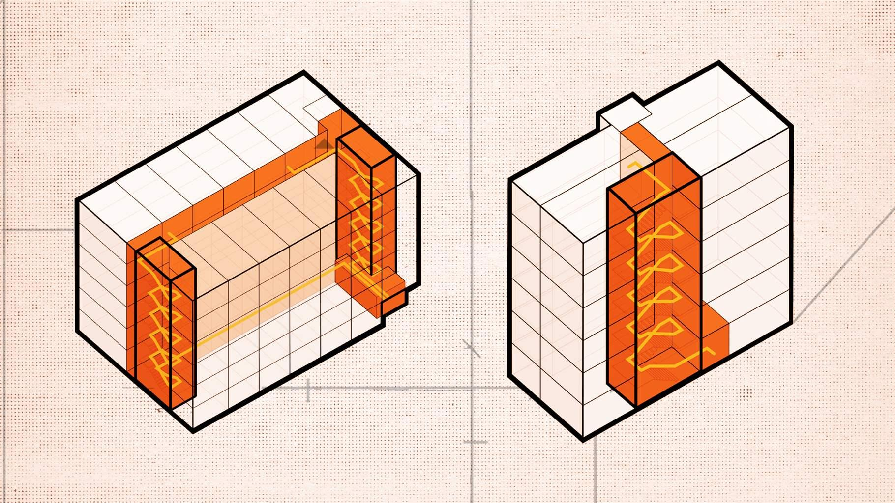

Support Infill Housing Across North Carolina
UPDATE: Unfortunately, these four bills no longer appear to have valid paths forward. Stay up to date on future actions by signing up for Asheville For All emails here.
Last month, we told you about a bill in the North Carolina General Assembly that would make a big difference for housing costs across the state.
This month, we have four more bills to tell you about!
They have all been introduced in the Senate by Buncombe County’s own Senator Julie Mayfield. A couple of these bills in particular could be game changing for Asheville AND North Carolina, and they need your support.
SB497: Expand Middle Housing
You probably know that Asheville has struggled with enacting meaningful “missing middle” pro-housing reforms. (If you’re not familiar with the term, check out our primer.) Even after the publication of the 2023 Asheville Missing Middle Housing Study and Displacement Risk Assessment warned that displacement would be exacerbated by failure to act, City Council has delayed and delayed action on even the most modest of reforms for our core residential neighborhoods.
SB497 would make it illegal for Asheville and other cities to cave in to the city’s NIMBYs when it comes to these modest changes. Specifically, it would make it legal for any residential lot in the city to have up to six homes. The bill also includes important language that would eliminate the various incentives in our zoning code that favor single-family-home construction even where apartments are already allowed.
SB499: Allow Housing Near Jobs
This bill would make it mandatory for apartments to be allowed anywhere that is zoned for things like restaurants, offices, and retail. In Asheville, we already allow homes in our commercial zones. But this is a common sense reform that will help other cities.
SB495: Regulation of Accessory Dwelling Units
This bill will make it easier for homeowners to build Accessory Dwelling Units—ADUs, or “granny flats”—on their property. ADUs are currently allowed in Asheville, but they are limited to a certain size. This bill would allow detached ADUs to be built up to the same square footage as the lot’s primary home, or 800 square feet, whichever is less. It would also make it illegal for cities to require off-street parking for ADUs.
While this bill may not bring in sweeping changes for Asheville, it may better incentivize ADUs in surrounding communities.
SB492: Single Stair Code Reform
This is the most technical of the four bills, but the topic of “single stair reform” might also be the one that gets pro-housing policy activists across the country the most fired up these days.
Currently in North Carolina and much of the country, any buildings taller than three stories are effectively required to have what are called “double loaded corridors”—big hallways that connect at least two sets of stairs and elevators. This is an ineffectual and outdated safety code, and the result is that apartment buildings are required to have big footprints once they reach four floors. These buildings cost more to build and have less usable square footage than “single stair” buildings, which are commonly found in Europe taller than three stories.
And because of the way that existing codes force very specific building layouts, they also make two- and three-bedroom apartments much harder to build.
The result of all of this—no surprise—is that it makes housing more expensive and more scarce.

Single stair reform makes “courtyard apartment” configurations more feasible. And it also allows skinny infill buildings suitable for more traditional walkable urban neighborhoods, like this:
Energy around “Single-stair” reform appears to be sweeping the country, with states from Massachusetts to California undertaking the process of re-examining their building codes. There’s no reason why North Carolina can’t do the same.
Write Your North Carolina General Assembly Representatives
Use the form below to send letters to your North Carolina representatives to ask them to support these four bills.
(We use your address to figure out who your representatives are.)
Once you enter your information and click “start writing,” then we’ll provide some default text and you’ll have the option of customizing it if you’d like.
IMPORTANT!: If you live in the Asheville or Hendersonville areas, you may be presented with two letters to send. This is just so we can send a different “thank you” letter to the bill’s co-sponsors.
Please be sure to click “send letter” on both pages!
Scroll to send your letters! ⬇️